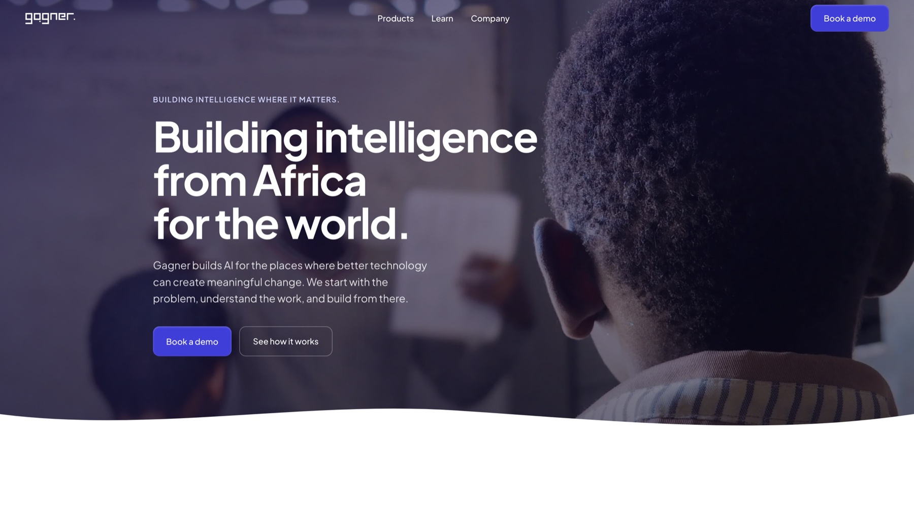

Multi-tenant architecture
One codebase serving many schools, with each school's data kept separate and secure.
AI-powered school management SaaS
One platform for how a Nigerian school actually runs: learning, administration and finance in one place for students, parents and staff, with AI that helps learners understand more and takes routine work off teachers' desks.

Role-based dashboards
With automated result processing
Result access modelled on WAEC
Adaptive quizzes & tutoring
Lessons, assessments, attendance, fees, report cards and admissions usually live in separate tools. Teachers re-enter the same data and parents chase information. The goal was a single system any school could adopt, without any school ever seeing another school's data.
I architected Gagner for Schools as a multi-tenant SaaS: a single platform serving many schools, each in its own isolated space. On top of it sit modular, role-based dashboards, so a student, teacher, admin and super admin each see exactly what their job needs and nothing more.
One codebase serving many schools, with each school's data kept separate and secure.
Modular dashboards for four roles (Student, Teacher, Admin and Super Admin) driven by permissions.
Computer-based tests that are scored and processed automatically, so results don't wait on manual entry.
Results are released through PINs, modelled on WAEC's infrastructure, a pattern families already understand.
Adaptive quizzes, intelligent tutoring, performance analytics and skill-based certification.
A school portal with admissions and recruitment entry points, plus a mobile app for everyday use.
Lessons, AI study help, quizzes and results.
Fees, attendance and report cards for every child.
Classes, assessments, scores and attendance.
Admissions, finance, staff and school records.
